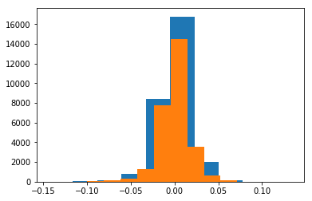
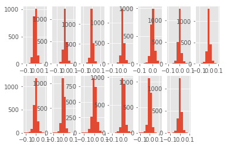
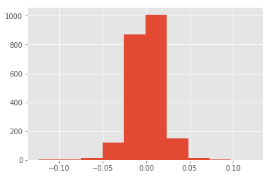
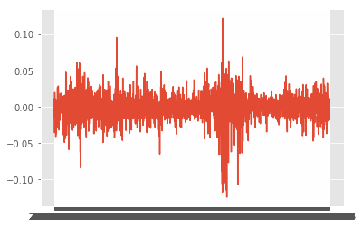
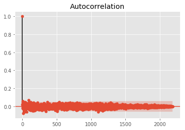

一、导入处理完毕的数据
1 | import pandas as pd |
1 | data=pd.read_csv('/home/fanxi/桌面/mydata.csv') |
二、选择要进行分析的数据
观察上表，发现data中有数据缺失，为了方便起见，这里选取前13个无数据缺失的行业股价进行演示
首先计算13个行业的开/收盘价的收益率
计算日收益率的方法：（后一天的价格-前一天的价格）/前一天的价格
1 | #一次性计算13个行业开盘价的日收益率并将其存入名为op的list里面 |
正在处理第 2 列数据...
正在处理第 5 列数据...
正在处理第 8 列数据...
正在处理第 11 列数据...
正在处理第 14 列数据...
正在处理第 17 列数据...
正在处理第 20 列数据...
正在处理第 23 列数据...
正在处理第 26 列数据...
正在处理第 29 列数据...
正在处理第 32 列数据...
正在处理第 35 列数据...
正在处理第 38 列数据...
处理完毕^^
1 | #计算13个行业的收盘价的日收益率并将其存入名为cp的list里面 |
正在处理第 3 列数据...
正在处理第 6 列数据...
正在处理第 9 列数据...
正在处理第 12 列数据...
正在处理第 15 列数据...
正在处理第 18 列数据...
正在处理第 21 列数据...
正在处理第 24 列数据...
正在处理第 27 列数据...
正在处理第 30 列数据...
正在处理第 33 列数据...
正在处理第 36 列数据...
正在处理第 39 列数据...
处理完毕^^
三、检验13个行业总体的开/收盘价的收益率是否符合正态分布
1 | plt.hist(op) |
(array([ 54., 146., 314., 1319., 7790., 14480., 3561., 607.,
123., 24.]),
array([-0.09991755, -0.08084738, -0.06177721, -0.04270704, -0.02363687,
-0.0045667 , 0.01450346, 0.03357363, 0.0526438 , 0.07171397,
0.09078414]),
<a list of 10 Patch objects>)

上图中蓝色和黄色直图形分别是开盘价和收盘价的日收益率直方图，可见13个行业总体的开/收盘价近似服从正态分布
四、将13个行业的收益率（以开盘价收益率为例）分为13组，便于后续对单个行业的收益率进行分析
由于一共选取了13个行业的数据，且每一个行业都总共有2187个样本，根据计算日收益率的公式可知，每一个行业在经过计算后会得到2187-1=2186个数值
来验证下，以op（开盘价）为例：
1 | len(op) |
28418
len(op)，即13个行业总共计算所得到的日收益率的个数为28418，那么它除以（2187-1）应该等于13：
1 | len(op)/2186 |
13.0
下面分析各行业本身的开/收盘价收益率,即分别从op和cp中每2186个作一次断点，并将它们分别存入一个数据框，以op（开盘价日收益率）为例
首先创建一个空的数据框：
1 | op_df=pd.DataFrame(columns=('code1','code2','code3','code4','code5','code6','code7','code8','code9','code10','code11','code12','code13')) |
1 | #r用来存储13个行业的日收益率，length（i）=2186*13 for that length(r[i])=2186 && length(r)=13 |
1 | for j in range(13): |
将上述13个行业的开盘价收益率其导出为excel文件：
1 | op_df.to_excel('/home/fanxi/桌面/syl.xlsx') |
五、对上一步导出的数据进行描述性统计
1 | op_df.describe() |
| code1 | code2 | code3 | code4 | code5 | code6 | code7 | code8 | code9 | code10 | code11 | code12 | code13 | |
|---|---|---|---|---|---|---|---|---|---|---|---|---|---|
| count | 2186.000000 | 2186.000000 | 2186.000000 | 2186.000000 | 2186.000000 | 2186.000000 | 2186.000000 | 2186.000000 | 2186.000000 | 2186.000000 | 2186.000000 | 2186.000000 | 2186.000000 |
| mean | -0.000066 | 0.000219 | 0.000026 | 0.000011 | 0.000140 | 0.000159 | -0.000317 | -0.000221 | 0.000362 | 0.000228 | -0.000002 | 0.000377 | -0.000202 |
| std | 0.018789 | 0.021309 | 0.017761 | 0.015380 | 0.016096 | 0.016493 | 0.018332 | 0.018529 | 0.016860 | 0.021486 | 0.015057 | 0.017948 | 0.018799 |
| min | -0.124258 | -0.143910 | -0.119851 | -0.113881 | -0.106067 | -0.106569 | -0.127582 | -0.119958 | -0.102080 | -0.122597 | -0.115996 | -0.112736 | -0.125943 |
| 25% | -0.009272 | -0.010077 | -0.007948 | -0.007342 | -0.007777 | -0.007730 | -0.009152 | -0.009361 | -0.007915 | -0.010517 | -0.007003 | -0.008011 | -0.009525 |
| 50% | 0.000322 | 0.001056 | -0.000193 | -0.000359 | 0.000531 | -0.000469 | -0.000115 | 0.000232 | 0.000677 | 0.000897 | -0.000458 | 0.000863 | 0.000241 |
| 75% | 0.009956 | 0.011067 | 0.008209 | 0.007036 | 0.008428 | 0.007124 | 0.009001 | 0.009415 | 0.009767 | 0.011368 | 0.006654 | 0.009849 | 0.009427 |
| max | 0.122340 | 0.113569 | 0.133592 | 0.085993 | 0.067272 | 0.093090 | 0.100459 | 0.107821 | 0.110808 | 0.087418 | 0.077173 | 0.119230 | 0.099404 |
六、绘制直方图检验正态性
1 | plt.style.use('ggplot') |

把所有的图画在一张图片上，显示不太清楚
可以取出来其中一个，比如第一个行业（即code1对应行业）的直方图
1 | import matplotlib.pyplot as plt |
(array([6.000e+00, 5.000e+00, 1.300e+01, 1.190e+02, 8.690e+02, 1.008e+03,
1.500e+02, 1.300e+01, 2.000e+00, 1.000e+00]),
array([-0.12425762, -0.09959784, -0.07493806, -0.05027828, -0.0256185 ,
-0.00095871, 0.02370107, 0.04836085, 0.07302063, 0.09768041,
0.1223402 ]),
<a list of 10 Patch objects>)

收益率近似服从正态分布
七、预测未来几期的收益率，以code1为例
1 | to_pre_data=op_df.iloc[:,[-1,0]] |
1 | #制作数据透视表 |
1 | #绘制时间序列图 |

从时序图中可以看出，该序列是比较平稳的
1 | #计算该序列的均值和标准差 |
均值： code1 -0.000066
dtype: float64
标准差： code1 0.018784
dtype: float64
由于收益率本身的绝对值就比较小，所以在认为该序列不是白噪声序列的前提下，继续下一步
1 | from statsmodels.graphics.tsaplots import plot_acf,plot_pacf |
1 | plot_acf(to_pre_data.iloc[:,1]) |

1 | to_pre_data.index=to_pre_data['date']#重置index |
1 | model=ARIMA(to_pre_data.iloc[:,1],order=(1,0,1))#构建模型 |
/home/fanxi/anaconda3/lib/python3.7/site-packages/statsmodels/tsa/base/tsa_model.py:225: ValueWarning: A date index has been provided, but it has no associated frequency information and so will be ignored when e.g. forecasting.
' ignored when e.g. forecasting.', ValueWarning)
关于用statsmodels进行时间序列预测的代码细节还不太会，等学完来更